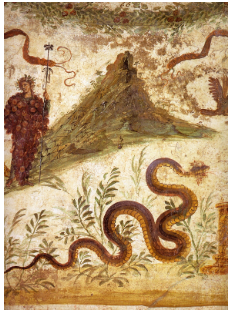

Through analysis of skeletal remains found within the site and assumptions based on Pompeii environment as well as quotes and built sources (e.g. pipes) we are able to deduce conclusions regarding the health of Pompeii’s citizens. Pompeii and the surrounding regions of Mt. Vesuvius were highly fertile due to nutrient rich volcanic soil found within the region. We can observe this through depictions in art, such as source 1 and quotes such as source 2.
Source 1: Fresco of Bacchus and snakes
Given the social context, snakes were a representation of fertility unlike today's portay of the snake as a scary or vile creature. When viewed through this lens we can understand that the fresco conveys the motif of a fertile region and when combined with our modern knowledge and source 2, a quote from Pliny, Pompeii’s fertile nature becomes undeniable.
Source 2: Quote from Pliny the Elder ‘One of the loveliest places on earth… a fertile region so blessed with pleasant scenery that it was the work of nature in a happy mood.’
The fertile nature of the region suggests good health, as supported by Dr Estelle Lazar’s study of skulls and skeletons throughout the region. Her study which examined approx. 300 skulls concluded that Pompeiians were well nourished, while the study of skeletons reveals an average height of 167cm for males and 155cm for females. Again showing the people were well nourished as growth was not stunted.
We can assume diseases like malaria were common due to the prevalence of water features within the city, Bradley stating fountains were ‘usually no more than 70 to 80 meters apart’. Although this wasn’t the only issue presented by Pompeii’s water infrastructure, lead poisoning was also common. As previously discussed Pompeii featured a complex water distribution network, however what was not discussed was the health impacts. The pipes within this water network were made of lead, leading to lead contamination. While it is believed that sinter deposits may have protected water from lead contamination, Keenan-Jones, Hellstrom and Drysdale describe a study of 93 skeletons from Herculaneum as ‘[showing] exceptionally high levels of lead concentration in a contemporary and nearby population’. We are able to assume Pompeii suffered from the same circumstance as their water network was almost identical, both featuring sinter build up.
Other sources attest to poor hygiene with Roman medical writer, Celsus advising people not to go to the baths with wounds, as it would cause infection. Modern scientific knowledge, makes Pompeii’s baths become less appealing as the unchlorinated warm water and humid environment as well as the lack of soup would have created the perfect breeding ground for bacteria. Bradley’s description of the public laritne, ‘[posing] serious health risks to users’, also creates an appealing image of the city.